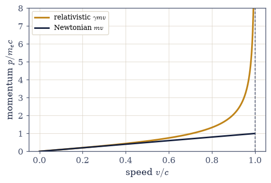
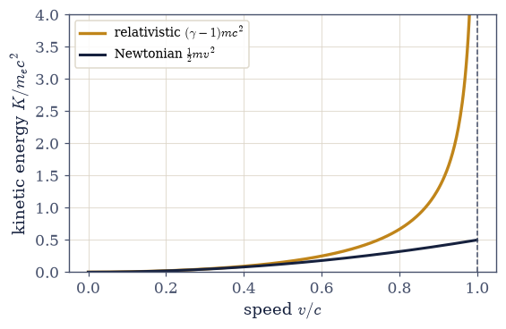
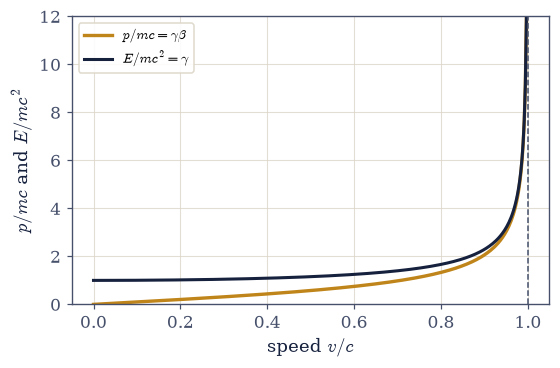

4.5 Four-Momentum and E = mc²#
Notebook overview#
Volume IV has so far been kinematics: how lengths, times, and velocities transform. This notebook turns to dynamics, and to the most famous equation in physics. The route is not a leap of genius to be admired from afar but a near-forced consequence of one demand: that momentum conservation survive into relativity. Newton’s \(p=m\mathbf v\) cannot meet that demand, because velocities transform by the nonlinear addition rule of §4.2, so a collision that balances \(\sum m\mathbf v\) in one frame does not balance it in another. Something must replace \(m\mathbf v\).
The replacement writes itself once we have four-vectors. The proper-time derivative of position is the four-velocity \(u^\mu=\gamma(c,\mathbf v)\), a genuine four-vector because proper time is invariant; multiplying by the mass gives the four-momentum \(p^\mu=mu^\mu\), whose conservation is automatically frame-independent. When we read off its components we find the spatial part is the relativistic momentum \(\gamma m\mathbf v\) and — the surprise — the time part is an energy, \(E=\gamma mc^2\). Setting the object at rest leaves \(E=mc^2\): the rest energy was hiding in the time slot of momentum all along.
We reuse the tensor toolkit built in §4.3 — the Minkowski metric \(\eta\) and the np.einsum
contraction for four-vector norms — rather than rederiving it, and lean on it for the
invariant \(u\cdot u=-c^2\) and the master relation \(E^2-(pc)^2=(mc^2)^2\). The key figures are
static comparisons of the relativistic energy, momentum, and kinetic energy against their
Newtonian shadows, showing where the two agree at low speed and where the relativistic
curves run away to infinity at \(c\). There is no genuine motion to animate here; the physics
is algebra and the curves tell the story.
Everything is in SI units, with \(c=1/\sqrt{\mu_0\varepsilon_0}=2.998\times10^8\,\)m/s and the electron (\(m_ec^2\approx0.511\,\)MeV) as the worked example, energies quoted in joules and electron-volts as convenient.
How to read the checks. Each exercise closes with a
validatecall against an independent fact: Newtonian momentum failing under a boost; the four-velocity norm \(-c^2\); the four-momentum matching the rest-frame \((mc,0,0,0)\) boosted into the lab; the low-speed energy equal to \(mc^2+\tfrac12mv^2\) to floating point; the invariant \(E^2-(pc)^2=(mc^2)^2\) unchanged by a boost; a boosted photon keeping \(E'=p'c\) with the Doppler rescaling; the momentum diverging as \(v\to c\). A ✓ is strong evidence; a ✗ is a prompt to locate the discrepancy, not a verdict.Scope. Four-momentum and the mass-energy relation; collisions and decays follow in §4.6. See Einstein 1905 []; Nolting, Theoretical Physics 4 [Nol17]; Taylor & Wheeler, Spacetime Physics [TW92]; and §4.3 (four-vectors and the
np.einsumtoolkit) and §4.2 (velocity addition).
Theory in brief#
Why Newtonian momentum fails#
Newton’s momentum is conserved frame to frame only under Galilean addition. Under the relativistic velocity-addition rule of §4.2, which is nonlinear, a collision balancing \(\sum m\mathbf v\) in one frame need not balance it in another,
Relativity demands a new momentum whose conservation does not depend on the frame.
Four-velocity#
Differentiate position by the invariant proper time \(\tau\), not the frame-dependent coordinate time,
Because \(\tau\) is invariant, \(u^\mu\) is a genuine four-vector, with the fixed norm \(-c^2\) we
verify with the metric/np.einsum toolkit of §4.3.
Four-momentum#
Multiply by the rest mass,
Being \(m\) times a four-vector, \(p^\mu\) transforms cleanly and its conservation is frame-independent. The spatial part is the relativistic momentum (reducing to \(m\mathbf v\) at low speed); the time part is an energy.
E = mc²#
At rest (\(v=0\), \(\gamma=1\)) the energy is the rest energy,
the rest energy \(mc^2\) plus the Newtonian kinetic energy \(\tfrac12mv^2\) plus relativistic corrections. The relativistic kinetic energy is \(K=(\gamma-1)mc^2\), which tends to \(\tfrac12mv^2\) at low speed and diverges as \(v\to c\).
The invariant mass relation#
The norm of the four-momentum is \(\eta_{\mu\nu}p^\mu p^\nu=-(mc)^2\), which rearranges to the frame-independent
the “relativistic Pythagoras” binding energy, momentum, and mass. For a massless particle (\(m=0\)) it gives \(E=pc\) exactly — light carries energy and momentum with no mass.
The speed limit, dynamically#
As \(v\to c\), \(\gamma\to\infty\), so
Reaching \(c\) would cost infinite momentum and energy. The limit is enforced by dynamics, the infinite cost of the last increment of speed, not by velocities “capping” at \(c\).
Setup#
Data and instruments only: the CODATA constants that fix \(c=1/\sqrt{\mu_0\varepsilon_0}\),
the electron mass and the electron-volt that make the worked example concrete, the series
palette, and — reused rather than rebuilt — the Lorentz factor \(\gamma\) of
§4.2, that notebook’s velocity rule written in subtraction
form, and the four-vector toolkit of §4.3: the Minkowski metric
\(\eta\), the np.einsum norm, and the \(4\times4\) boost. This notebook’s own machinery is
not here: you write the four-velocity \(u^\mu\) in Exercise 2 and the four-momentum
\(p^\mu=mu^\mu\) in Exercise 3, and every energy, momentum, and invariant that follows is read
off those two. No randomness appears anywhere in this notebook.
The Setup below holds this notebook’s data and instruments — nothing you are asked to build. It is collapsed so the building stays yours; expand it whenever you want the details.
Exercise 1 — Why Newtonian momentum is not enough (worked)#
Begin with the problem that forces the whole construction. Newton’s momentum \(p=mv\) is conserved in a collision, and conserved in every frame — but only under Galilean velocity addition. Relativity replaces that with the nonlinear addition rule of §4.2, and under it the bookkeeping breaks: a collision arranged to conserve \(\sum mv\) in the lab frame fails to conserve it in a boosted frame Eq. 352. A Newtonian elastic collision and a relativistic change of frame are enough to see it.
The collision below is the simplest such arrangement: 1-D, elastic, unequal masses
(\(m_2=2m_1\)), with \(u_1=0.5c\) and \(u_2=0\). Its outgoing velocities come from the Newtonian
elastic formulas \(w_1=[(m_1-m_2)u_1+2m_2u_2]/(m_1+m_2)\) and
\(w_2=[(m_2-m_1)u_2+2m_1u_1]/(m_1+m_2)\), built so that both \(\sum mv\) and \(\sum\tfrac12mv^2\)
balance in the lab. The second frame moves at \(V=0.6c\), and velocities are carried into it by
the relativistic subtraction rule \(w=(u-V)/(1-uV/c^2)\) of §4.2 — the Setup’s vel_sub.
Build the collision from those formulas and confirm that \(\sum mv\) in equals \(\sum mv\) out in the lab frame.
Transform all four velocities into the \(V=0.6c\) frame with
vel_sub, form \(\sum mv\) in and out there, and confirm with anumpycomparison that the lab balance survives while the boosted one does not.
lab frame: Σmv in = +0.5000 mc, out = +0.5000 mc → conserved
V=0.6c frame: Σmv in = -1.3429 mc, out = -1.3636 mc → NOT conserved
boosted-frame imbalance: -0.0208 mc
Validation 1#
✓ Newtonian momentum is conserved in the lab frame but NOT in the boosted frame
True
Exercise 2 — Four-velocity and its invariant norm (worked)#
The cure begins by differentiating position by the one time everyone agrees on: the proper time \(\tau\), not the frame-dependent coordinate time. The result is the four-velocity \(u^\mu=\gamma(c,\mathbf v)\) Eq. 353, a genuine four-vector because \(\tau\) is invariant. Its defining property is a fixed norm, \(u\cdot u=-c^2\), the same for every particle in every frame, which we check with the metric contraction from §4.3 rather than rederiving it. This is the first piece of the notebook’s own machinery, and everything downstream — the four-momentum, the energy, the invariant mass — is built on it.
Write
four_velocity(vx, vy, vz), returning \(u^\mu=\gamma(c,\mathbf v)\) Eq. 353 as an explicit length-4numpyarray: the Setup’sgammaevaluated at the speed \(|\mathbf v|=\sqrt{v_x^2+v_y^2+v_z^2}\), multiplying \(c\) in the time slot and each velocity component in the spatial slots.Build \(u^\mu\) for a particle at \(v=0.8c\) and compute \(u\cdot u\) with the toolkit of §4.3,
np.einsum('a,ab,b->', u, ETA, u)(the Setup’sfour_norm), confirming it equals \(-c^2\) to numerical precision, independent of the speed chosen.
v = 0.8c: u^μ = γ(c, v, 0, 0), γ = 1.6667
u·u = η_μν u^μ u^ν = -8.987552e+16 m²/s²
−c² = -8.987552e+16 m²/s²
Validation 2#
✓ the four-velocity has invariant norm −c² [got -8.98755e+16 vs expected -8.98755e+16 (rtol=1e-09, atol=1e-09)]
True
Exercise 3 — Four-momentum: relativistic momentum and energy (worked)#
Multiplying the four-velocity by the rest mass gives the four-momentum \(p^\mu=mu^\mu= (E/c,\mathbf p)\) Eq. 354. Because it is \(m\) times a four-vector it transforms cleanly, so a law written as “total \(p^\mu\) is conserved” holds in every frame — exactly the property Newtonian momentum lacked. Reading off its parts, the spatial momentum is \(\mathbf p=\gamma m\mathbf v\), larger than the Newtonian \(m\mathbf v\) by the factor \(\gamma\) and diverging as \(v\to c\) (Fig. 365, which sets the relativistic curve against the Newtonian straight line), and the time part is the energy \(E=\gamma mc^2\).
The reading-off can be checked against a construction that never mentions \(\gamma\) at all. In
the electron’s rest frame there is no motion and no kinetic energy, so the four-momentum is
forced to be \((mc,0,0,0)\); the lab sees the electron at \(+0.8c\), which means the lab moves at
\(-0.8c\) relative to the rest frame, so the inverse boost boost4(-0.8) must carry that rest
four-momentum onto the lab one — \(E=\gamma mc^2\) and \(p=\gamma mv\) included.
Write
four_momentum(m, vx, vy, vz), the rest mass times thefour_velocityyou wrote in Exercise 2, returning \(p^\mu=(E/c,\mathbf p)\) Eq. 354.For an electron at \(v=0.8c\), build \(p^\mu\) and read off the energy as \(E=p^0c\) and the spatial momentum as
np.linalg.norm(p4[1:]), comparing each with \(\gamma mc^2\) and \(\gamma mv\).Boost the rest four-momentum \((mc,0,0,0)\) into the lab with
boost4(-0.8)(the matrix product@) and confirm it reproduces \(p^\mu\) component by component.
electron at v = 0.8c, γ = 1.6667
E = p⁰c = 1.3645e-13 J = 0.8517 MeV vs γmc² = 1.3645e-13 J
|p| = 3.6412e-22 kg·m/s vs γmv = 3.6412e-22 kg·m/s
relativistic |p| is larger than Newtonian mv by the factor γ = 1.6667
boosted rest four-momentum reproduces p^μ: True
Validation 3#
✓ p^μ=mu^μ matches the rest four-momentum (mc,0,0,0) boosted into the lab (p=γmv, E=γmc²) [max|Δ| = 9.40395e-38 (rtol=1e-09, atol=0)]
True

Fig. 365 Relativistic momentum \(p=\gamma mv\) (amber) against the Newtonian \(mv\) (dark), for an electron, in units of \(m_ec\). The two coincide at low speed, where \(\gamma\approx1\), but the relativistic momentum curves upward and diverges as \(v\to c\) (dashed): the same force buys less and less speed, because the momentum runs away instead. The Newtonian line, by contrast, would let \(p\) stay finite and \(v\) pass \(c\).#
Exercise 4 — E = mc² and the low-speed expansion (worked)#
Now the famous result, and it is not an add-on but a reading of the four-momentum. At rest (\(v=0\), \(\gamma=1\)) the energy \(E=\gamma mc^2\) becomes simply \(E=mc^2\), the rest energy: mass is a form of energy, and a stationary electron already holds \(0.511\,\)MeV Eq. 355. Expanding \(E=\gamma mc^2\) for \(v\ll c\) gives \(mc^2+\tfrac12mv^2+\cdots\) — the rest energy plus exactly Newton’s kinetic energy, with the next term suppressed by \((v/c)^2\). Newton’s \(\tfrac12mv^2\) was the first correction to the rest energy all along. The relativistic kinetic energy \(K=(\gamma-1)mc^2\) matches \(\tfrac12mv^2\) at low speed and diverges at \(c\) (Fig. 366, which plots the two together).
The test speed below is \(v=10^{-3}c\), and the printout runs to twelve significant figures because the first omitted term is smaller than the kinetic piece by \((v/c)^2\approx10^{-6}\): at that resolution the agreement is a statement about the expansion, not about rounding.
Evaluate the electron’s rest energy \(mc^2\), the famous \(0.511\,\)MeV.
At \(v=10^{-3}c\) compare the exact \(E=\gamma mc^2\) with \(mc^2+\tfrac12mv^2\) as plain
numpyarithmetic, confirming they agree to floating point (the omitted \(\tfrac38mv^4/c^2\) is negligible there).
electron rest energy mc² = 8.1871e-14 J = 0.5110 MeV
at v = 1e-3 c:
exact E = γmc² = 8.187109881515e-14 J
mc² + ½mv² = 8.187109881512e-14 J
relative difference = 3.75e-13
Validation 4#
✓ at low speed the energy is the rest energy plus the Newtonian kinetic energy [got 8.18711e-14 vs expected 8.18711e-14 (rtol=1e-12, atol=0)]
True

Fig. 366 Relativistic kinetic energy \(K=(\gamma-1)m c^2\) (amber) against the Newtonian \(\tfrac12 m v^2\) (dark), for an electron, in units of \(m_ec^2\). The two curves are indistinguishable at low speed — Newton’s kinetic energy is the leading term of the relativistic one — but the relativistic energy climbs without bound as \(v\to c\) (dashed), while the Newtonian parabola tops out at a finite \(\tfrac12\). Accelerating a particle to \(c\) would take infinite energy.#
Exercise 5 — The invariant mass relation (worked)#
The four-momentum has a norm, and like every four-vector norm it is the same in every frame. Computing \(\eta_{\mu\nu}p^\mu p^\nu=-(mc)^2\) and rearranging gives the master equation of relativistic dynamics, \(E^2-(pc)^2=(mc^2)^2\) Eq. 356, a “relativistic Pythagoras” relating energy, momentum, and mass. The rest mass is the invariant length of the four-momentum: observers disagree about \(E\) and \(p\) separately, but never about \(E^2-(pc)^2\). The particle is the electron of Exercise 3, and the second frame moves at \(0.5c\).
Compute \(E^2-(pc)^2\) from that electron’s \(E\) and \(|\mathbf p|\) and confirm it equals \((mc^2)^2\).
Boost its four-momentum with
boost4(0.5)(the matrix product@), read \(E'\) and \(|\mathbf p'|\) off the boosted components, and confirm \(E'^2-(p'c)^2\) is unchanged — the invariant mass is frame-independent.
E² − (pc)² (original frame) = 6.702870e-27 J²
E² − (pc)² (0.5c frame) = 6.702870e-27 J²
(mc²)² = 6.702870e-27 J²
invariant under the boost: True
Validation 5#
✓ E²−(pc)²=(mc²)² is frame-independent (holds before and after a boost) [max|Δ| = 5.73972e-42 (rtol=1e-09, atol=1e-09)]
True
Exercise 6 — Massless particles: E = pc (student)#
The invariant relation has a striking limit. Set the mass to zero, and \(E^2-(pc)^2=0\) gives \(E=pc\) exactly Eq. 356. A massless particle still carries energy and momentum, locked together as \(E=pc\), and must move at exactly \(c\) (any other speed would need \(\gamma m\) with \(m=0\), which is zero or undefined). This is the photon. It is also why light carries momentum and exerts radiation pressure — the Poynting flux of §3.10 delivers momentum \(E/c\) for energy \(E\).
The specimen below is a \(2\,\)eV photon (visible light) travelling along \(x\), so its four-momentum is \(p^\mu=(E/c)(1,1,0,0)\). Writing it that way makes \(E=pc\) true by construction, which is exactly why the interesting test lies elsewhere: viewed from a frame receding at \(0.5c\), the boost mixes the components as \(E'/c=\gamma(E/c-\beta p_x)\), and for a null four-vector that mixing collapses to a pure rescaling by the relativistic Doppler factor \(\sqrt{(1-\beta)/(1+\beta)}\). A boost rescales a null four-momentum but cannot tilt it off the light cone.
Construct that massless four-momentum and confirm its
four_normis zero.Boost it to the receding frame with
boost4(0.5)and confirm withnp.linalg.normthat \(E'=p'c\) still holds there, with \(E'/E\) equal to the Doppler factor.
photon energy E = 2.0 eV
four-momentum norm η_μν p^μ p^ν = 0.000e+00 (zero → massless)
in the 0.5c frame: E' = 1.1547 eV, p'c = 1.1547 eV → E' = p'c
E'/E = 0.577350 vs Doppler factor √((1−β)/(1+β)) = 0.577350
Validation 6#
✓ a boosted photon keeps E'=p'c, rescaled by the Doppler factor √((1−β)/(1+β)) [max|Δ| = 1.11022e-16 (rtol=1e-12, atol=0)]
True
Exercise 7 — The speed limit is dynamical (student)#
We can now see why nothing massive reaches \(c\), and it is not because velocities “cap”. A particle can always be pushed harder; what runs away is its momentum, not its speed. Since \(p=\gamma mv\) and \(\gamma\to\infty\) as \(v\to c\) Eq. 357, the momentum and energy diverge while the speed creeps ever closer to \(c\) without reaching it (Fig. 367). The cosmic speed limit is enforced by the infinite cost of the last sliver of speed — a dynamical statement, not a kinematic decree. The figure plots \(p/mc\) and \(E/mc^2\) diverging at the limit; the table below samples the same divergence at four speeds, the last of which, \(0.999c\), already costs more than \(20\,mc\) of momentum.
Tabulate \(p=\gamma mv\) in units of \(mc\) at \(v=0.5c\), \(0.9c\), \(0.99c\), \(0.999c\) as plain
numpyarithmetic, alongside \(E/mc^2=\gamma\).Confirm with a comparison that the momentum grows without bound — strictly increasing, and past \(20\,mc\) at the last speed — while \(v\) stays below \(c\) throughout.
v/c p/mc (= γβ) E/mc² (= γ)
0.500 0.577 1.155
0.900 2.065 2.294
0.990 7.018 7.089
0.999 22.344 22.366
p/mc grows without bound while v stays below c: True
Validation 7#
✓ the speed limit is enforced by diverging momentum, not by velocity capping
True

Fig. 367 Momentum \(p/m c=\gamma\beta\) (amber) and energy \(E/mc^2=\gamma\) (dark) against speed. Both diverge as \(v\to c\) (dashed): no matter how much momentum or energy is supplied, the speed only approaches \(c\) and never reaches it. The speed limit is dynamical — the cost of the next increment of speed grows without bound — rather than a ceiling imposed on velocity itself.#
Exercise 8 — Mass, energy, momentum: one object#
Stand back and see what a single demand produced. We asked only that momentum conservation be frame-independent, and that requirement forced us to differentiate by proper time, build the four-velocity, and multiply by mass — and out fell a four-vector whose spatial part is the relativistic momentum and whose time part is the energy. \(E=mc^2\) is then not an isolated marvel but the rest value of that energy, the time component of momentum seen by an observer the object is not moving relative to. Mass, energy, and momentum are three faces of one four-vector, and the rest mass is its invariant length. The universe does its dynamical bookkeeping in four-momentum, and we merely learned to read the ledger.
One check closes the notebook, and it is the identity that contains everything: the rest energy at \(p=0\), the photon at \(m=0\), and every particle in between.
Confirm with
np.allclosethat for the electron of Exercise 3 the energy, momentum, and mass satisfy \(E^2=(pc)^2+(mc^2)^2\) at machine precision.
E² = 1.861908e-26 J²
(pc)²+(mc²)² = 1.861908e-26 J²
E² = (pc)² + (mc²)² holds: True
energy, momentum, and mass are one four-vector; its length is the mass
Validation 8#
✓ E²=(pc)²+(mc²)² — energy, momentum, and mass are one object
True
Notebook summary#
Newtonian momentum fails Eq. 352: a collision conserving \(\sum mv\) in the lab does not conserve it in a frame boosted at \(0.6c\) (the velocities transform nonlinearly), so relativity needs a new momentum.
Four-velocity and four-momentum Eq. 353, Eq. 354: \(u^\mu=\gamma(c,\mathbf v)\) has the invariant norm \(u\cdot u=-c^2\) (via the
np.einsumtoolkit of §4.3), and \(p^\mu=mu^\mu=(E/c,\mathbf p)\) gives \(\mathbf p=\gamma m\mathbf v\) and \(E=\gamma mc^2\) with frame-independent conservation.E = mc² Eq. 355: the rest energy is the time component at rest (\(0.511\,\)MeV for the electron); expanding \(\gamma mc^2\) at \(v=10^{-3}c\) reproduces \(mc^2+\tfrac12mv^2\) to floating point, and \(K=(\gamma-1)mc^2\) matches \(\tfrac12mv^2\) at low speed.
The invariant mass relation Eq. 356: \(E^2-(pc)^2=(mc^2)^2\) is unchanged by a boost; for \(m=0\) it gives \(E=pc\) (the photon, with
four_normzero), preserved under a \(0.5c\) boost with the Doppler rescaling \(\sqrt{(1-\beta)/(1+\beta)}\) — the basis of radiation pressure (§3.10).The dynamical speed limit Eq. 357: \(p=\gamma mv\) and \(E=\gamma mc^2\) diverge as \(v\to c\) (\(p/mc=22.3\) at \(0.999c\)), so reaching \(c\) costs infinite energy — the limit is enforced by dynamics, not by velocities capping.
Mass, energy, and momentum are one four-vector, bound by \(E^2=(pc)^2+(mc^2)^2\).
Outlook#
Relativistic collisions and decays (§4.6). Four-momentum conservation in action: thresholds, particle creation, and annihilation, where \(E^2-(pc)^2\) does the heavy lifting.
The relativistic Lagrangian and motion in fields (§4.7). Dynamics in an electromagnetic field, tying back to the field tensor \(F^{\mu\nu}\) of §3.12.
Binding energy and the mass defect. Nuclear energy as \(\Delta m\,c^2\) (a pointer).
Massless particles and radiation pressure. The \(E=pc\) photon, a callback to the Poynting flux and radiation of §3.10.
Cross-reference §4.3 (four-vectors and the
np.einsumtoolkit reused here) and §3.12 (four-momentum in the covariant formulation).